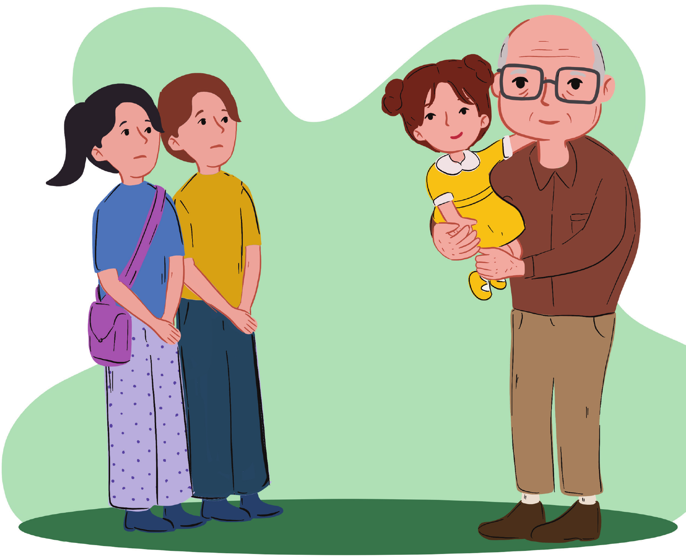

Mirëkuptimi, solidariteti, empatia dhe respekti ndaj të tjerëve
Vlerat
Situata 1.
Motra e vogël e Dritanit po tërhiqte këmbët zvarrë e nuk po na arrinte dot. M’u duk sikur po qante. Unë me Dritanin nxituam hapat dhe kështu u larguam shumë prej saj. Dikur, zëri i saj nuk dëgjohej më.
Ne nxituam për të arritur në teatrin e kukullave, për të siguruar orarin, por nuk kishim qëllim ta linim jashtë. Sapo arritëm te dera e teatrit, një plak, i kërrusur, por energjik, po e sillte drejt nesh në krahë. U ndiem në faj
